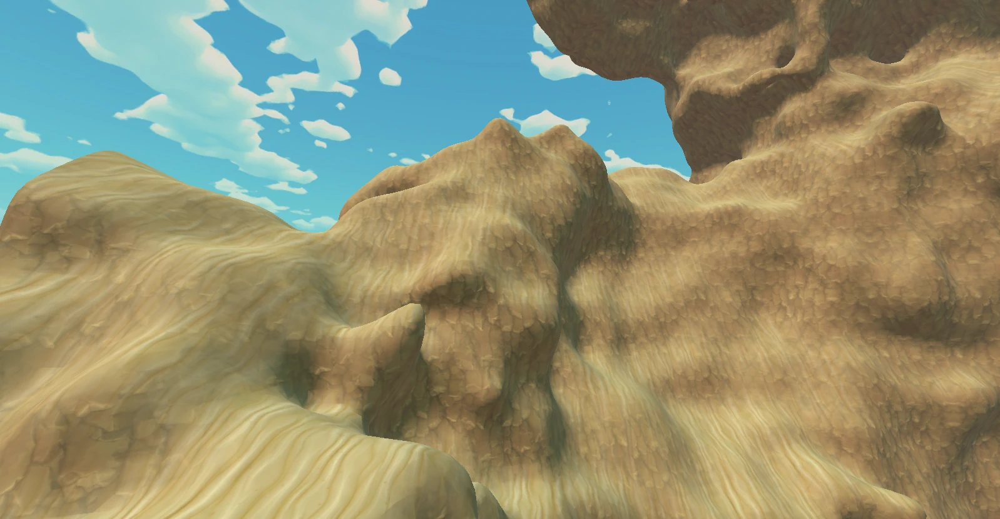
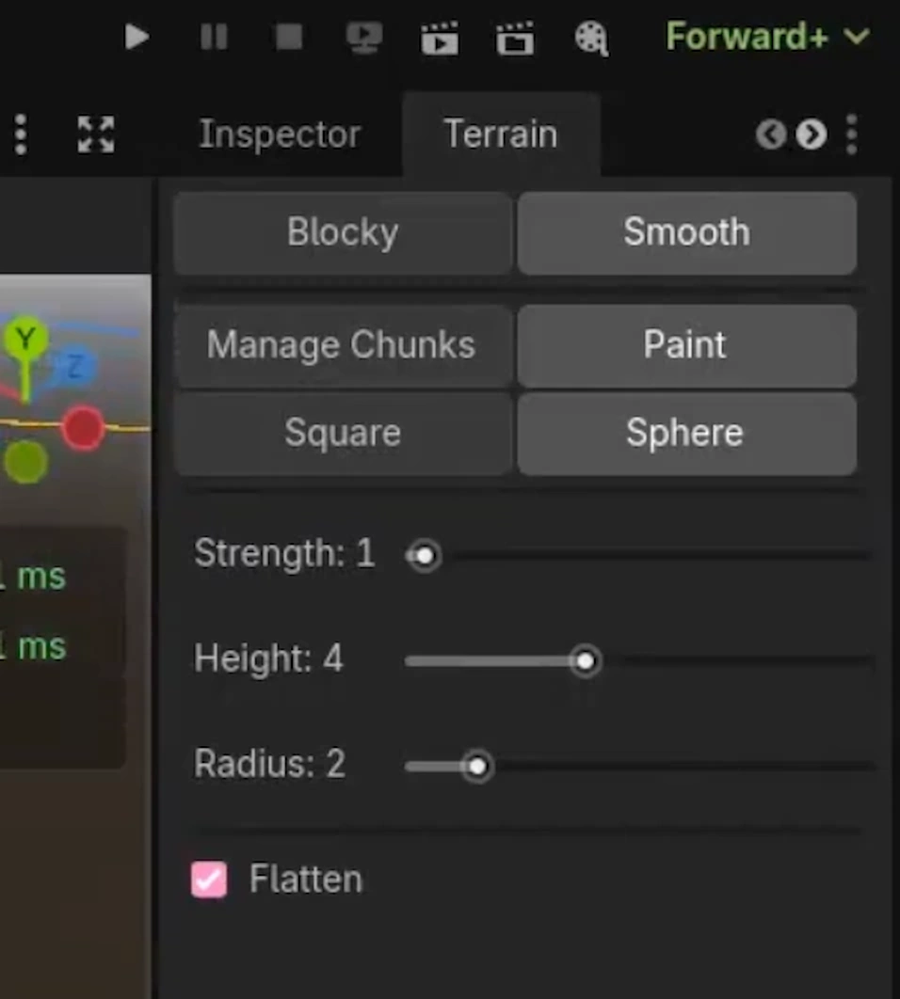
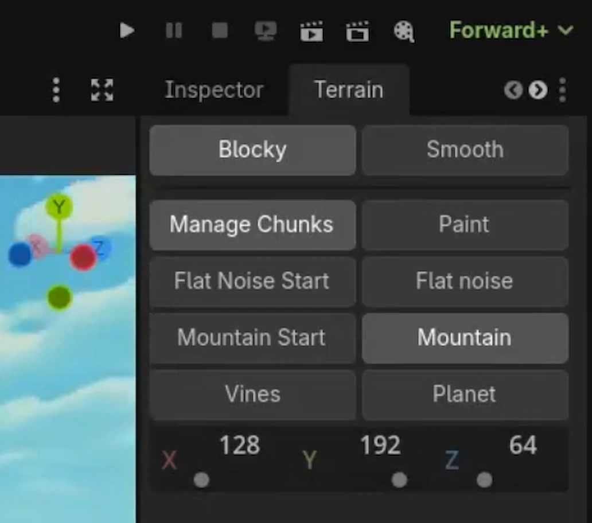

Terrain Tool
Marching Cubes in-editor Tool for Game Terrain
Developed in 4 weeks
The terrain tool uses marching cubes to convert a 3D grid of numerical values
(iso values) into a mesh.
Marching cubes work by iterating each voxel in the desired area and by encoding the
iso value of each corner as a bit in an 8-bit integer, a cube configuration index.
It is used to look up edge indices in a triangulation table.
The result from the look up can look like this:
[0, 11, 2, 8, 11, 0, -1, -1, -1, -1, -1, -1, -1, -1, -1, -1]
where each triangle has 3 indices which means that we can create a for-loop with a step
size of 3 to iterate over the edge indices in order to create triangles. In a blocky
fashion, the center point between edge index a and edge index b can be
used to generate vertex positions but in order to smoothen the mesh, the vertex position
can be interpolated between the two edge indices based on the iso values they correspond
to. This will cause the surface of the generated mesh to be positioned exactly where the
iso grid transitions from above the surface value to below the surface value,
resulting in smoother terrain.
When generating blocky terrain, vertices are duplicated for each face in order to allow
for flat-shaded terrain. For the smooth terrain, I am generating indices which allows
the terrain to easily share normals as well as to reduce the vertex count. The
normals are calculated by taking all of the connected faces' normals and averaging
them together.


Showing difference between center of edge interpolation and iso value interpolation for vertices.
To allow for creating terrain in the Godot editor, a plugin had to be created.
Plugins are loaded on startup and scripts marked as tools are able to run inside of
the editor.
_forward_3d_gui_input() is a function which can be overridden to provide an input
event for anything happening inside of the 3D viewport. This is used to handle button
presses in order to create chunks of terrain. To do this, a plane is created at the world
origin at height 0 which a ray in intersected with to figure out where to place the chunk.
To prevent chunk placement every time one would click in the viewport, this code only
runs when the custom Terrain node is selected inside of the hierarchy, allowing
easy control of terrain management without interfering with normal editor usage.
Similar work went into painting the mesh, which meant altering the iso grid values to
cause the terrain to generate differently. Instead of intersecting a ray against a plane,
an intersection test against the terrain mesh itself had to take place. Luckily, Godot
makes it really easy to generate a trimesh collider for objects (only one line of code!)
so that was no issue. The hard part was implementing the changes to the iso grid as well
as regenerating chunks properly. For this, two different kinds of brushes were created,
one for painting square shapes and one for spherical shapes. The iso grid values around
the intersection point are altered gradually to be under what is considered the surface
threshold. A problem was encountered as painting along the edges of a chunk would cause
a harsh cutoff; the neighboring chunks weren't being regenerated. To solve this, when an
iso value passes from under the surface threshold to above, or the opposite, the
local X and Z coordinates within the chunks are sampled to detect if the iso value
is on a border. If it is, the chunk located in the borders direction is added to a list
of affected chunks. If two chunks gets added to the list, for both the X and Z axes- a
chunk would also have to be regenerated on the diagonals. So this is naturally handled
as well.
To make usage of the tool easy, work went into making a custom dock for the editor.
Godot has excellent support for creating your own custom UI that can be integrated with
the engine and made to work just like their own UI. I decided to create a custom dock
designed to be positioned next to the Inspector. Then, functionality was added to to it
by creating buttons that would allow the user to select the chunk management tool or the
paint tool. Both of these would have their own set of buttons and inputs to control the
type of terrain created, chunk size or brush type, brush strength, height, width, radius
and so on.


When working on this project, something that was always in the back of my mind was
how cool it'd be to utilize this fancy meshing algorithm with procedural generation; as
it is something I find quite fascinating! This part of the project became a small bonus
feature as I did not expect to finish the marching cube algorithm as well as the mesh
painting as fast as I did.
See this as a demo of what the tool/algorithm could be used for, more so than an
actual finished thing.
To make procedural terrain that was easily usable while still keeping to the in-engine
workflow, I decided to add on to the chunk management part of the tool. I added a couple
buttons that would show up in the dock that allows for creating of terrain which adheres
to pre-determined generation rules. So depending on which terrain option that is
selected, a noise algorithm generates an iso value which is then be processed in
certain ways, such as fading out the terrain towards the top of the chunk. To get
procedurally generated terrain for this tool I simply used a mix of 2D and 3D perlin
noise, depending on the terrain type. More effort went into blending chunks
into each other properly- which first was an issue because the mesh fadeout I implemented
towards the edges of the chunks used a linear fadeout across the entire chunk. This meant
that the edge at the opposite side of the chunk from which it fades from would be altered,
something which wouldn't be applied to the neighboring chunks and therefore cause a
desync in the processed noise values at the borders. I fixed this by implementing a
smoothstep that is more aggressive towards the start of the border and completely
moot at the end of the border.
The results of This kind of terrain can be seen below.